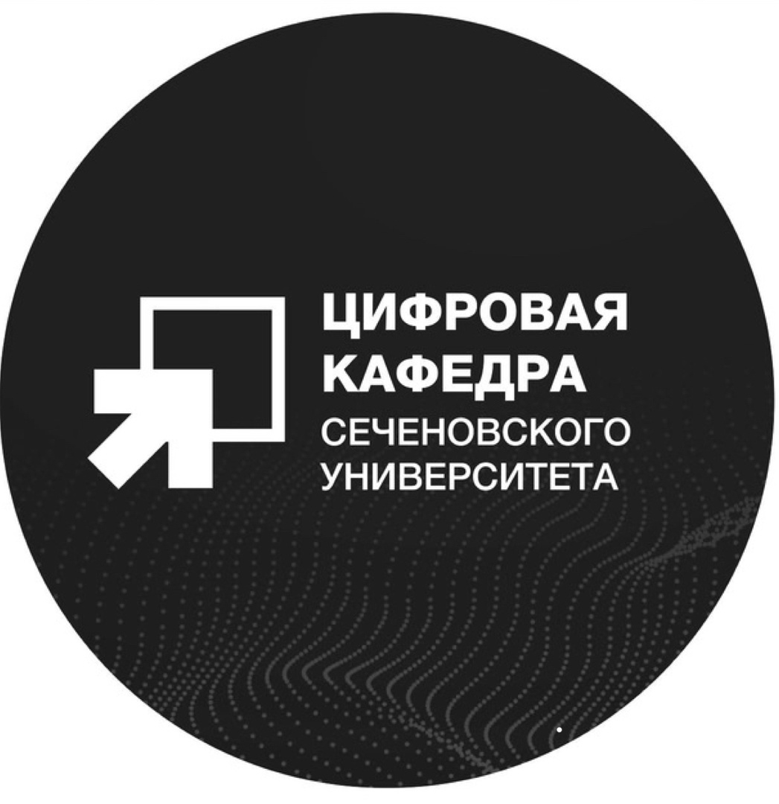
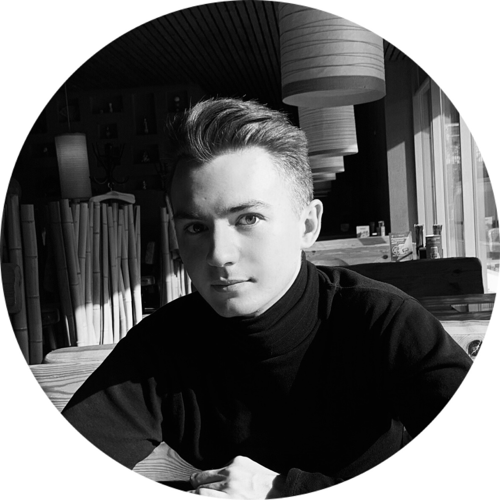
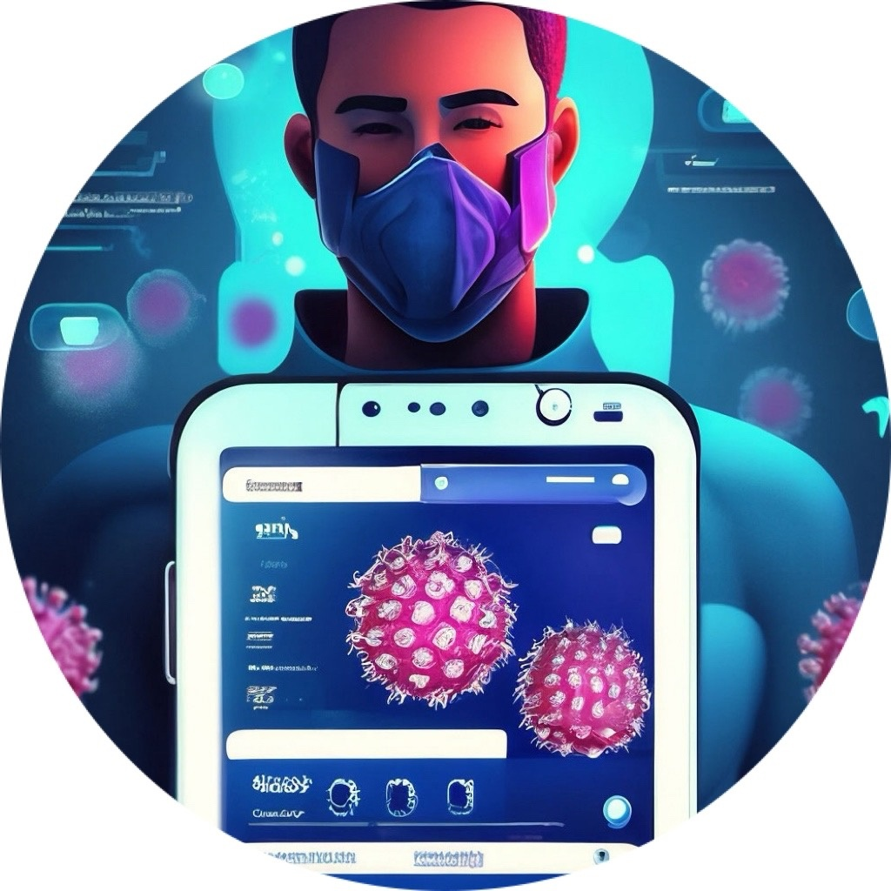

Обучение по программе разработчика цифровых медицинских сервисов стало особым моментом в нашей жизни. Оно позволило нам погрузиться в мир информационных технологий и получить ценные знания, которые мы смогли применить на практике. С помощью поддержки наших преподавателей и тьюторов, мы объединились в команду и начали разрабатывать свой проект.
Цифровая кафедра Сеченового Университета стала нашим надежным руководителем и наставником на данном пути. Благодарим за поддержку и возможность развиваться в области цифровой медицины. Мы уверены, что наш проект будет приносить пользу и помогать многим людям.

Чёрный Артем Владимирович - трекер проекта
Первый МГМУ им. И.М. Сеченова, ИКМ, 6 курс
Активно занимается научной деятельностью на кафедре инфекционных болезней Сеченовского Университета, регулярно выступает на научных конференциях, где представляет свои исследовательские работы, докладывает клинические случаи и публикует научные тезисы
Именной стипендиат Правительства Москвы 2018, 2019, 2020, 2021 гг.

Абашева Дарья Денисовна - участник проекта
Первый МГМУ им. И.М. Сеченова, ИКМ, 4 курс
Дубкова Лариса Николаевна - участник проекта
Первый МГМУ им. И.М. Сеченова, ИКМ, 4 курс
Строжкова Валерия Алекеевна - участник проекта
ОмГМУ, ИКМ, 4 курс
Фомина Марина Сергеевна - участник проекта
ОмГМУ, ИКМ, 5 курс
Черных Дарья Андреевна - участник проекта
ОмГМУ, ИКМ, 5 курс